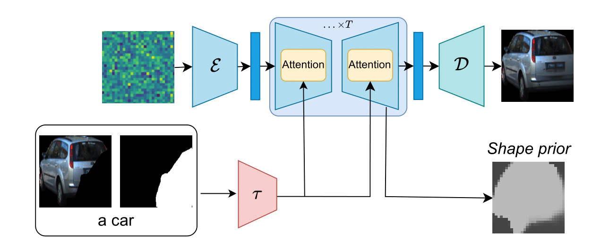
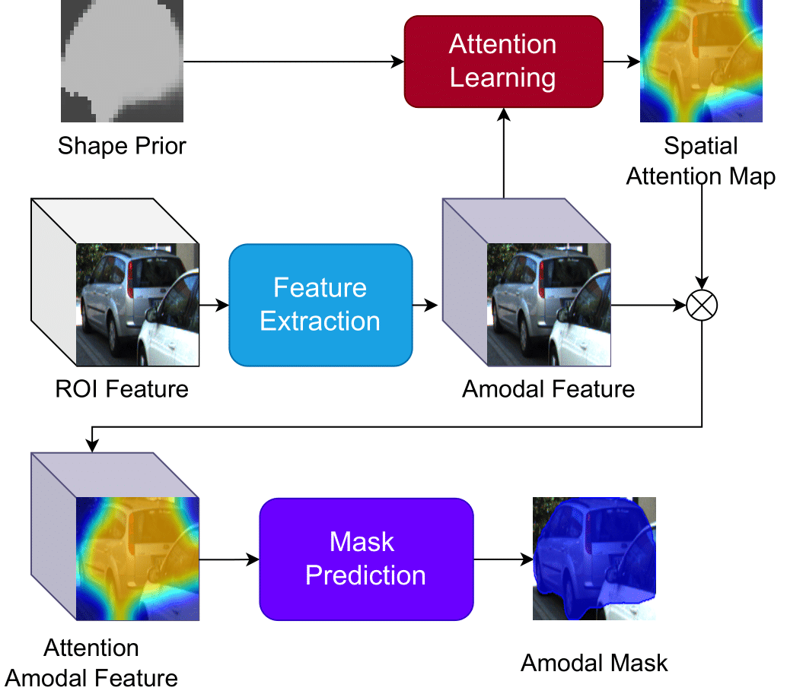

Amodal Instance Segmentation with Diffusion Shape Prior Estimation ACCV 2024
- Minh Tran University of Arkansas
- Khoa Vo University of Arkansas
- Tri Nguyen Coupang, Inc.
- Ngan Le University of Arkansas
Abstract
Amodal Instance Segmentation (AIS) presents an intriguing challenge, including the segmentation prediction of both visible and occluded parts of objects within images. Previous methods have often relied on shape prior information gleaned from training data to enhance amodal segmentation. However, these approaches are susceptible to overfitting and disregard object category details. Recent advancements highlight the potential of conditioned diffusion models, pretrained on extensive datasets, to generate images from latent space. Drawing inspiration from this, we propose AISDiff with a Diffusion Shape Prior Estimation (DiffSP) module. AISDiff begins with the prediction of the visible segmentation mask and object category, alongside occlusion-aware processing through the prediction of occluding masks. Subsequently, these elements are inputted into our DiffSP module to infer the shape prior of the object. DiffSP utilizes conditioned diffusion models pretrained on extensive datasets to extract rich visual features for shape prior estimation. Additionally, we introduce the Shape Prior Amodal Predictor, which utilizes attention-based feature maps from the shape prior to refine amodal segmentation. Experiments across various AIS benchmarks demonstrate the effectiveness of our AISDiff.
Proposed Modules
 Left: Overall process of Diffusion Shape Prior Estimation (DiffSP),Right: Overall design of Shape Prior Amodal Predictor.
Qualitative Results
Qualitative results of AISDiff. Left to right: Input RoI, Visible masks, Occluding masks, Amodal masks.